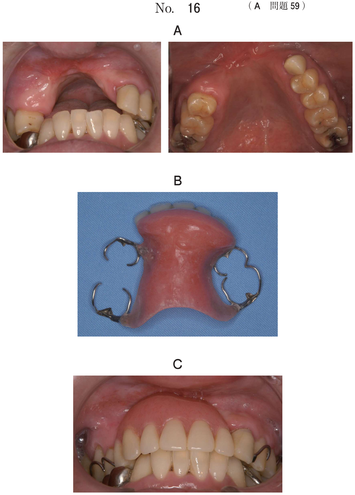
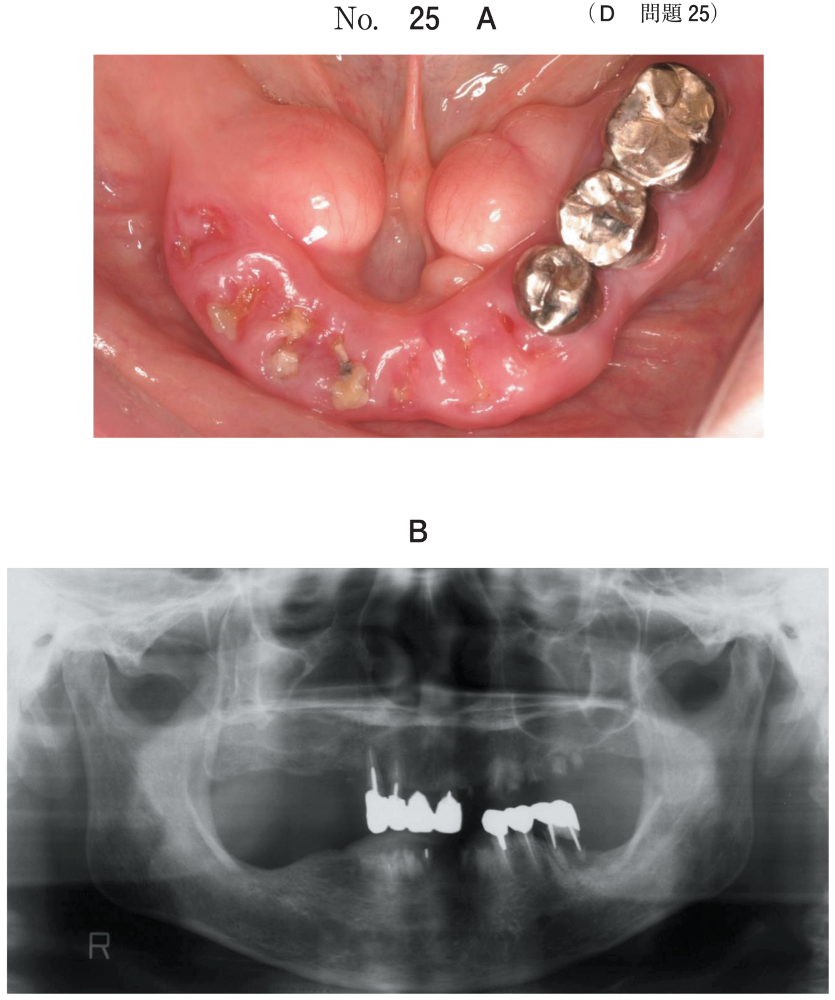
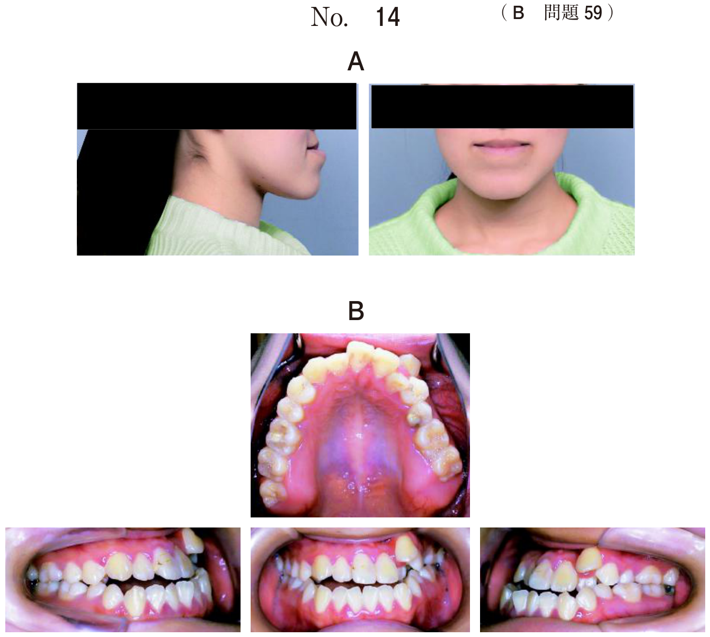
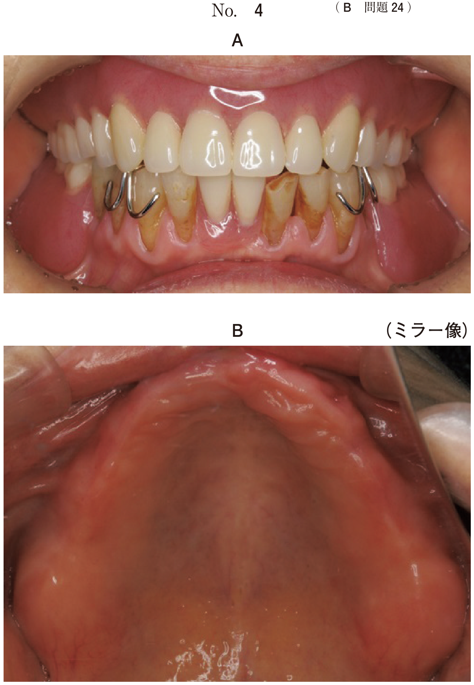

コンポジットレジン修復
CR修復の適応
| 条件 | 適応 |
|---|---|
| 実質欠損あり | CR修復 |
| 冷水痛のみ（自発痛なし） | CR修復 |
| 自発痛あり | 歯髄処置（覆髄、断髄など） |
| 白斑・白濁のみ（実質欠損なし） | フッ化物塗布（CR修復は不要） |
- 実質欠損がある → CR修復
- 冷水痛のみで自発痛なし → CR修復可能
- 自発痛あり → 歯髄処置が必要
- 幼若永久歯でも症状に応じてCR修復可能
マトリックスの選択（頻出）
| 器材 | 用途 |
|---|---|
| Tバンド | 乳臼歯隣接面のCR修復（金属製バンド） |
| ウェッジ | 隣接面修復時の隔壁、接触点の回復 |
| ポリエステル製ストリップス | 前歯隣接面のCR修復（透明マトリックス） |
| サービカルマトリックス | 歯頸部窩洞の修復 |
| クラウンフォーム | CR冠、既製冠の製作 |
部位別マトリックスの選択
- 乳前歯隣接面：ポリエステル製ストリップス + ウェッジ
- 乳臼歯隣接面：Tバンド + ウェッジ
乳歯のCR修復の特徴
- 乳歯エナメル質は薄く、酸処理時間は短め
- 乳歯の齲蝕は進行が速い
- 隔壁（ウェッジ）で隣接面を保護
- 接触点の回復が重要（食片圧入防止）
過去問
4歳の男児。下顎左側乳臼歯部の違和感を主訴として来院した。冷刺激に一過性に反応するが自発痛はない。初診時の口腔内写真（別冊No.29A）とエックス線画像（別冊No.29B）を別に示す。処置に用いるのはどれか。2つ選べ。


b ウェッジ
c クラウンフォーム
d サービカルマトリックス
e ポリエステル製マトリックス
【解説】乳臼歯隣接面のCR修復にはTバンド（隣接面マトリックス）とウェッジ（隔壁）を使用。ポリエステル製ストリップスは前歯用。
4歳の女児。上顎乳中切歯隣接面の着色を主訴として来院した。食物が歯間に挟まるという。初診時の口腔内写真（別冊No.42A）とエックス線写真（別冊No.42B）とを別に示す。処置に用いるのはどれか。2つ選べ。


b ウェッジ
c クラウンフォーム
d サービカルマトリックス
e ポリエステル製ストリップス
【解説】乳前歯隣接面のCR修復にはウェッジとポリエステル製ストリップス（透明マトリックス）を使用。Tバンドは臼歯用。
3歳の男児。上顎両側乳前歯口蓋側面の着色を主訴として来院した。1か月前から冷水痛があるという。初診時の口腔内写真（別冊No.20A）とエックス線画像（別冊No.20B）を別に示す。適切な対応はどれか。1つ選べ。


b 予防填塞
c フッ化物歯面塗布
d コンポジットレジン修復
e デンタルフロスによる清掃指導
【解説】実質欠損があり冷水痛がある（自発痛なし）ためCR修復が適応。フッ化物塗布は実質欠損がない初期齲蝕に適応。予防填塞は小窩裂溝が対象。
8歳の男児。下顎左側第一小臼歯の冷水痛を主訴として来院した。1か月前から自覚していたが、そのままにしていたという。自発痛と打診痛はない。初診時の口腔内写真（別冊No.8A）とエックス線画像（別冊No.8B）を別に示す。適切な対応はどれか。1つ選べ。


b コンポジットレジン修復
c アペキソゲネーシス
d アペキシフィケーション
e 抜 歯
【解説】幼若永久歯でも冷水痛のみで自発痛・打診痛がなければCR修復が適応。アペキソゲネーシス・アペキシフィケーションは歯髄処置後の根尖形成術。